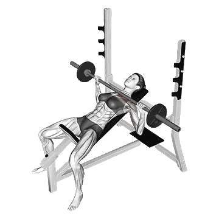

Incline Bench Press
Incline Bench Press mostra carga média e padrões de força como referência para peito. Músculos principais: Peitoral superior, Deltoides.

Carga média: Intermediário
Referência para uma pessoa de nível intermediário.
Homens
196 lb
Mulheres
97 lb
Carga média de Incline Bench Press [1RM]
| Nível | ||
|---|---|---|
| Iniciante | 98 lb | 29 lb |
| Novato | 142 lb | 58 lb |
| Intermediário | 196 lb | 97 lb |
| Avançado | 260 lb | 147 lb |
| Elite | 329 lb | 204 lb |
Nota: estes padrões são estimativas de 1RM baseadas em atletas médios. Peso corporal, idade e outros fatores pessoais podem afetar os valores. Veja as tabelas detalhadas abaixo.
Padrões de força de Incline Bench Press (lb)
Homens por peso corporal (lb) [1RM]
| Peso corporal | Iniciante | Novato | Intermediário | Avançado | Elite |
|---|---|---|---|---|---|
| 110 | 48 | 75 | 108 | 148 | 192 |
| 120 | 58 | 86 | 122 | 165 | 211 |
| 130 | 67 | 98 | 136 | 180 | 229 |
| 140 | 77 | 109 | 149 | 196 | 246 |
| 150 | 86 | 120 | 162 | 210 | 262 |
| 160 | 95 | 131 | 175 | 225 | 278 |
| 170 | 104 | 142 | 187 | 239 | 294 |
| 180 | 113 | 152 | 199 | 252 | 309 |
| 190 | 122 | 162 | 211 | 265 | 323 |
| 200 | 131 | 172 | 222 | 278 | 337 |
| 210 | 139 | 182 | 233 | 290 | 351 |
| 220 | 148 | 192 | 244 | 302 | 364 |
| 230 | 156 | 201 | 255 | 314 | 377 |
| 240 | 164 | 210 | 265 | 326 | 389 |
| 250 | 172 | 219 | 275 | 337 | 402 |
| 260 | 180 | 228 | 285 | 348 | 413 |
| 270 | 188 | 237 | 294 | 358 | 425 |
| 280 | 195 | 245 | 304 | 369 | 436 |
| 290 | 203 | 254 | 313 | 379 | 448 |
| 300 | 210 | 262 | 322 | 389 | 458 |
| 310 | 217 | 270 | 331 | 399 | 469 |
Homens por idade [1RM]
| Idade | Iniciante | Novato | Intermediário | Avançado | Elite |
|---|---|---|---|---|---|
| 15 | 83 | 121 | 167 | 221 | 280 |
| 20 | 95 | 138 | 191 | 253 | 321 |
| 25 | 98 | 142 | 196 | 260 | 329 |
| 30 | 98 | 142 | 196 | 260 | 329 |
| 35 | 98 | 142 | 196 | 260 | 329 |
| 40 | 98 | 142 | 196 | 260 | 329 |
| 45 | 93 | 134 | 186 | 247 | 312 |
| 50 | 87 | 126 | 175 | 231 | 293 |
| 55 | 80 | 117 | 162 | 214 | 271 |
| 60 | 73 | 106 | 148 | 195 | 247 |
| 65 | 66 | 96 | 133 | 176 | 223 |
| 70 | 60 | 86 | 120 | 158 | 200 |
| 75 | 53 | 77 | 107 | 142 | 179 |
| 80 | 48 | 69 | 96 | 127 | 160 |
| 85 | 43 | 62 | 86 | 113 | 144 |
| 90 | 38 | 56 | 77 | 102 | 129 |
Mulheres por peso corporal (lb) [1RM]
| Peso corporal | Iniciante | Novato | Intermediário | Avançado | Elite |
|---|---|---|---|---|---|
| 90 | 12 | 30 | 58 | 94 | 137 |
| 100 | 16 | 36 | 65 | 104 | 149 |
| 110 | 19 | 41 | 72 | 113 | 160 |
| 120 | 23 | 46 | 79 | 121 | 170 |
| 130 | 27 | 51 | 86 | 130 | 179 |
| 140 | 30 | 56 | 93 | 138 | 189 |
| 150 | 34 | 61 | 99 | 145 | 198 |
| 160 | 37 | 66 | 105 | 152 | 206 |
| 170 | 41 | 71 | 110 | 159 | 214 |
| 180 | 44 | 75 | 116 | 166 | 222 |
| 190 | 48 | 79 | 121 | 172 | 229 |
| 200 | 51 | 84 | 127 | 179 | 236 |
| 210 | 54 | 88 | 132 | 185 | 243 |
| 220 | 57 | 92 | 137 | 190 | 250 |
| 230 | 61 | 96 | 142 | 196 | 256 |
| 240 | 64 | 100 | 146 | 202 | 263 |
| 250 | 67 | 103 | 151 | 207 | 269 |
| 260 | 70 | 107 | 155 | 212 | 275 |
Mulheres por idade [1RM]
| Idade | Iniciante | Novato | Intermediário | Avançado | Elite |
|---|---|---|---|---|---|
| 15 | 25 | 49 | 83 | 125 | 174 |
| 20 | 29 | 56 | 95 | 143 | 199 |
| 25 | 29 | 58 | 97 | 147 | 204 |
| 30 | 29 | 58 | 97 | 147 | 204 |
| 35 | 29 | 58 | 97 | 147 | 204 |
| 40 | 29 | 58 | 97 | 147 | 204 |
| 45 | 28 | 55 | 92 | 140 | 194 |
| 50 | 26 | 51 | 87 | 131 | 182 |
| 55 | 24 | 47 | 80 | 121 | 168 |
| 60 | 22 | 43 | 73 | 111 | 154 |
| 65 | 20 | 39 | 66 | 100 | 139 |
| 70 | 18 | 35 | 59 | 90 | 125 |
| 75 | 16 | 31 | 53 | 80 | 111 |
| 80 | 14 | 28 | 47 | 72 | 100 |
| 85 | 13 | 25 | 42 | 64 | 89 |
| 90 | 12 | 23 | 38 | 58 | 80 |
Nota: uma barra padrão de academia geralmente pesa 44 lb.
Músculos trabalhados
| Grupo | Músculos |
|---|---|
| Músculos principais | Peitoral superior, Deltoides |
| Músculos secundários | Tríceps braquial, Bíceps braquial |
| Estabilizadores | Oblíquos externos |
| Pegada | Flexores do antebraço |
Registre e analise no app Shiba
Revise carga, repetições e progresso em um só lugar.
Como ler a tabela
| Nível | Descrição | Distribuição |
|---|---|---|
| Iniciante | Aprendeu a forma correta e treinou consistentemente por pelo menos 1 mês. | Base 5% |
| Novato | Treinou consistentemente por pelo menos 6 meses. | Top 80% |
| Intermediário | Treinou consistentemente por pelo menos 2 anos. | Top 50% |
| Avançado | Treinou consistentemente por mais de 5 anos. | Top 20% |
| Elite | Treinou especificamente este exercício por mais de 5 anos. | Top 5% |
Outros exercícios
Peito
Incline Dumbbell Bench Press
Peito / Halteres
Close-Grip Bench Press
Peito
Machine Chest Fly
Peito / Máquina
Dumbbell Fly
Peito / Halteres
Decline Dumbbell Fly
Peito / Halteres
Decline Bench Press
Peito
Smith Machine Bench Press
Peito / Máquina
Cable Fly
Peito / Cabo
Chest Press
Peito
Floor Press
Peito
Incline Dumbbell Fly
Peito / Halteres
Dumbbell Floor Press
Peito / Halteres